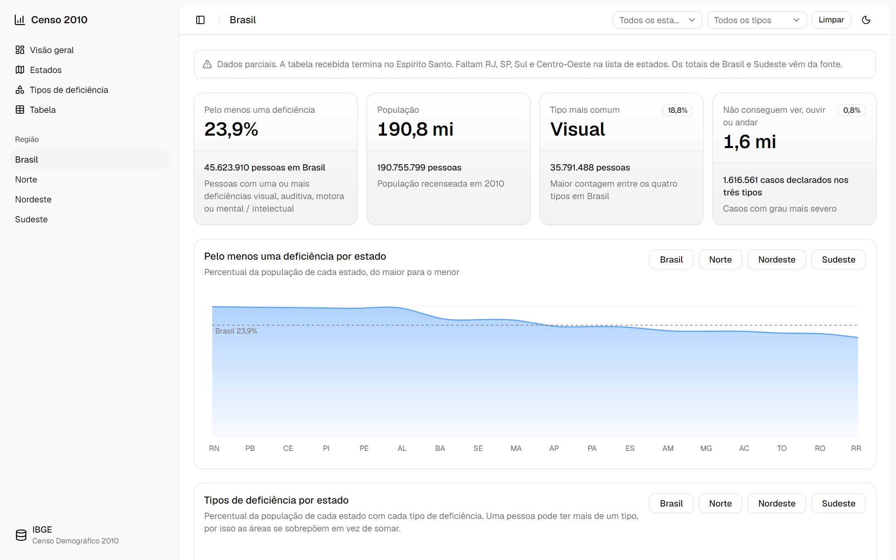
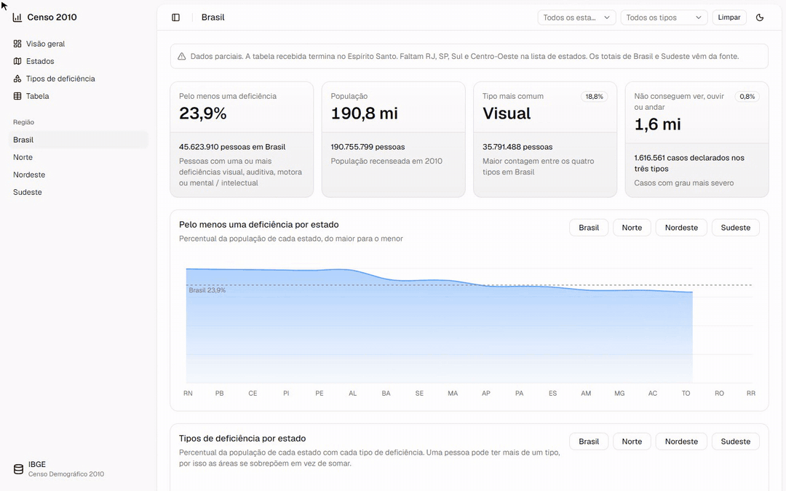
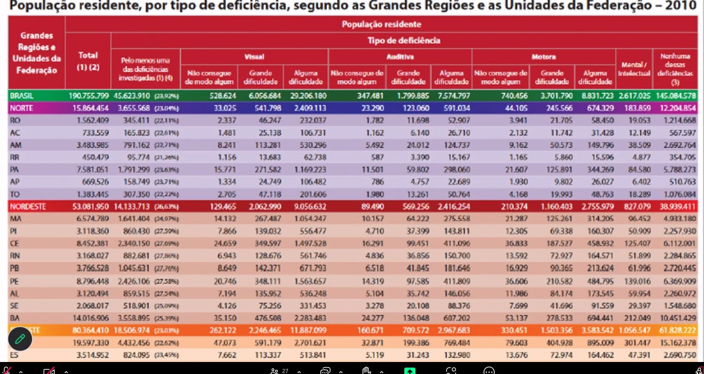
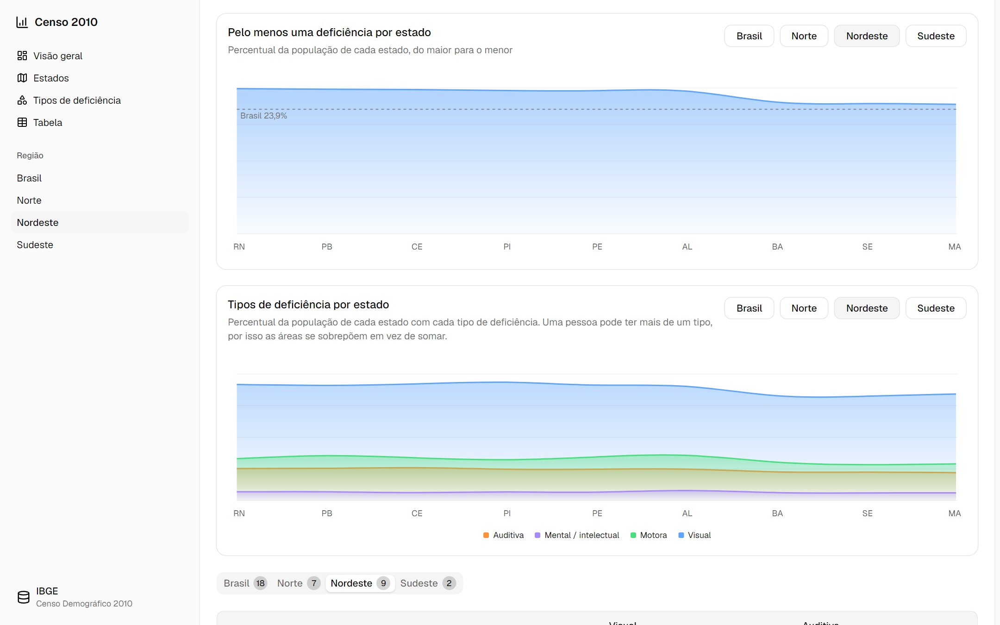
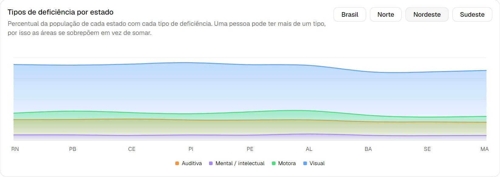
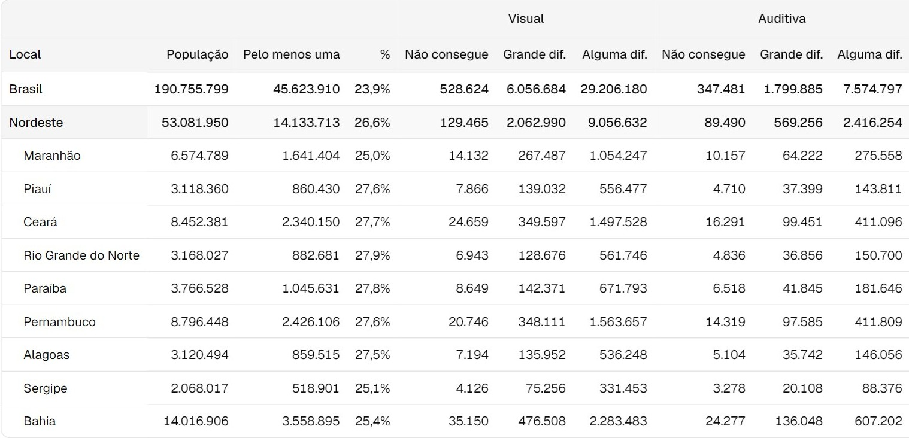

Semana da Tecnologia · UNASP 2026
Um painel aberto que torna dados públicos fáceis de ler.
Eduardo Ribeiro · Análise e Desenvolvimento de Sistemas



O problema
Era assim que os dados de deficiência estavam. Justamente quem tem deficiência visual não consegue ler.
Para quem
Pesquisa e trabalhos com dado oficial, sem perder horas na tabela.
Decidir onde investir em acessibilidade, região por região.
Pessoas com deficiência e famílias vendo a própria realidade em dados.
A solução
23,9%
dos brasileiros declararam pelo menos uma deficiência. No painel, isso aparece no primeiro segundo.
Compare regiões
Rio Grande do Norte, Paraíba e Ceará passam de 27% da população.

Explore os detalhes
Visual, auditiva, motora e intelectual lado a lado.

A tabela original

Na prática
Tudo responde na hora, sem recarregar a página.
Código aberto
Qualquer pessoa usa, copia e melhora.
Rápido, acessível, publicado na Vercel.
Completar todos os estados e atualizar com o Censo 2022.
Aponte a câmera e veja o código
github.com/duribeiro/censo-2010-deficiencia